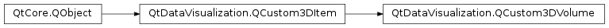

QtDataVisualization.QCustom3DVolume¶
Synopsis¶
Functions¶
- def
alphaMultiplier() - def
colorTable() - def
createTextureData(images) - def
drawSliceFrames() - def
drawSlices() - def
preserveOpacity() - def
renderSlice(axis, index) - def
setAlphaMultiplier(mult) - def
setColorTable(colors) - def
setDrawSliceFrames(enable) - def
setDrawSlices(enable) - def
setPreserveOpacity(enable) - def
setSliceFrameColor(color) - def
setSliceFrameGaps(values) - def
setSliceFrameThicknesses(values) - def
setSliceFrameWidths(values) - def
setSliceIndexX(value) - def
setSliceIndexY(value) - def
setSliceIndexZ(value) - def
setSliceIndices(x, y, z) - def
setSubTextureData(axis, index, data) - def
setSubTextureData(axis, index, image) - def
setTextureData(data) - def
setTextureDepth(value) - def
setTextureDimensions(width, height, depth) - def
setTextureFormat(format) - def
setTextureHeight(value) - def
setTextureWidth(value) - def
setUseHighDefShader(enable) - def
sliceFrameColor() - def
sliceFrameGaps() - def
sliceFrameThicknesses() - def
sliceFrameWidths() - def
sliceIndexX() - def
sliceIndexY() - def
sliceIndexZ() - def
textureData() - def
textureDataWidth() - def
textureDepth() - def
textureFormat() - def
textureHeight() - def
textureWidth() - def
useHighDefShader()
Signals¶
- def
alphaMultiplierChanged(mult) - def
colorTableChanged() - def
drawSliceFramesChanged(enabled) - def
drawSlicesChanged(enabled) - def
preserveOpacityChanged(enabled) - def
sliceFrameColorChanged(color) - def
sliceFrameGapsChanged(values) - def
sliceFrameThicknessesChanged(values) - def
sliceFrameWidthsChanged(values) - def
sliceIndexXChanged(value) - def
sliceIndexYChanged(value) - def
sliceIndexZChanged(value) - def
textureDataChanged(data) - def
textureDepthChanged(value) - def
textureFormatChanged(format) - def
textureHeightChanged(value) - def
textureWidthChanged(value) - def
useHighDefShaderChanged(enabled)
Detailed Description¶
-
class
PySide2.QtDataVisualization.QtDataVisualization.QCustom3DVolume([parent=nullptr])¶ -
class
PySide2.QtDataVisualization.QtDataVisualization.QCustom3DVolume(position, scaling, rotation, textureWidth, textureHeight, textureDepth, textureData, textureFormat, colorTable[, parent=nullptr]) Parameters: - colorTable –
- textureHeight –
PySide2.QtCore.int - position –
PySide2.QtGui.QVector3D - textureData –
QVector - textureFormat –
PySide2.QtGui.QImage.Format - rotation –
PySide2.QtGui.QQuaternion - textureDepth –
PySide2.QtCore.int - scaling –
PySide2.QtGui.QVector3D - textureWidth –
PySide2.QtCore.int - parent –
PySide2.QtCore.QObject
-
PySide2.QtDataVisualization.QtDataVisualization.QCustom3DVolume.alphaMultiplier()¶ Return type: PySide2.QtCore.float
-
PySide2.QtDataVisualization.QtDataVisualization.QCustom3DVolume.alphaMultiplierChanged(mult)¶ Parameters: mult – PySide2.QtCore.float
-
PySide2.QtDataVisualization.QtDataVisualization.QCustom3DVolume.colorTable()¶ Return type:
-
PySide2.QtDataVisualization.QtDataVisualization.QCustom3DVolume.colorTableChanged()¶
-
PySide2.QtDataVisualization.QtDataVisualization.QCustom3DVolume.createTextureData(images)¶ Parameters: images – Return type: QVector
-
PySide2.QtDataVisualization.QtDataVisualization.QCustom3DVolume.drawSliceFrames()¶ Return type: PySide2.QtCore.bool
-
PySide2.QtDataVisualization.QtDataVisualization.QCustom3DVolume.drawSliceFramesChanged(enabled)¶ Parameters: enabled – PySide2.QtCore.bool
-
PySide2.QtDataVisualization.QtDataVisualization.QCustom3DVolume.drawSlices()¶ Return type: PySide2.QtCore.bool
-
PySide2.QtDataVisualization.QtDataVisualization.QCustom3DVolume.drawSlicesChanged(enabled)¶ Parameters: enabled – PySide2.QtCore.bool
-
PySide2.QtDataVisualization.QtDataVisualization.QCustom3DVolume.preserveOpacity()¶ Return type: PySide2.QtCore.bool
-
PySide2.QtDataVisualization.QtDataVisualization.QCustom3DVolume.preserveOpacityChanged(enabled)¶ Parameters: enabled – PySide2.QtCore.bool
-
PySide2.QtDataVisualization.QtDataVisualization.QCustom3DVolume.renderSlice(axis, index)¶ Parameters: - axis –
PySide2.QtCore.Qt.Axis - index –
PySide2.QtCore.int
Return type: - axis –
-
PySide2.QtDataVisualization.QtDataVisualization.QCustom3DVolume.setAlphaMultiplier(mult)¶ Parameters: mult – PySide2.QtCore.float
-
PySide2.QtDataVisualization.QtDataVisualization.QCustom3DVolume.setColorTable(colors)¶ Parameters: colors –
-
PySide2.QtDataVisualization.QtDataVisualization.QCustom3DVolume.setDrawSliceFrames(enable)¶ Parameters: enable – PySide2.QtCore.bool
-
PySide2.QtDataVisualization.QtDataVisualization.QCustom3DVolume.setDrawSlices(enable)¶ Parameters: enable – PySide2.QtCore.bool
-
PySide2.QtDataVisualization.QtDataVisualization.QCustom3DVolume.setPreserveOpacity(enable)¶ Parameters: enable – PySide2.QtCore.bool
-
PySide2.QtDataVisualization.QtDataVisualization.QCustom3DVolume.setSliceFrameColor(color)¶ Parameters: color – PySide2.QtGui.QColor
-
PySide2.QtDataVisualization.QtDataVisualization.QCustom3DVolume.setSliceFrameGaps(values)¶ Parameters: values – PySide2.QtGui.QVector3D
-
PySide2.QtDataVisualization.QtDataVisualization.QCustom3DVolume.setSliceFrameThicknesses(values)¶ Parameters: values – PySide2.QtGui.QVector3D
-
PySide2.QtDataVisualization.QtDataVisualization.QCustom3DVolume.setSliceFrameWidths(values)¶ Parameters: values – PySide2.QtGui.QVector3D
-
PySide2.QtDataVisualization.QtDataVisualization.QCustom3DVolume.setSliceIndexX(value)¶ Parameters: value – PySide2.QtCore.int
-
PySide2.QtDataVisualization.QtDataVisualization.QCustom3DVolume.setSliceIndexY(value)¶ Parameters: value – PySide2.QtCore.int
-
PySide2.QtDataVisualization.QtDataVisualization.QCustom3DVolume.setSliceIndexZ(value)¶ Parameters: value – PySide2.QtCore.int
-
PySide2.QtDataVisualization.QtDataVisualization.QCustom3DVolume.setSliceIndices(x, y, z)¶ Parameters: - x –
PySide2.QtCore.int - y –
PySide2.QtCore.int - z –
PySide2.QtCore.int
- x –
-
PySide2.QtDataVisualization.QtDataVisualization.QCustom3DVolume.setSubTextureData(axis, index, image)¶ Parameters: - axis –
PySide2.QtCore.Qt.Axis - index –
PySide2.QtCore.int - image –
PySide2.QtGui.QImage
- axis –
-
PySide2.QtDataVisualization.QtDataVisualization.QCustom3DVolume.setSubTextureData(axis, index, data) Parameters: - axis –
PySide2.QtCore.Qt.Axis - index –
PySide2.QtCore.int - data –
PySide2.QtCore.uchar
- axis –
-
PySide2.QtDataVisualization.QtDataVisualization.QCustom3DVolume.setTextureData(data)¶ Parameters: data – QVector
-
PySide2.QtDataVisualization.QtDataVisualization.QCustom3DVolume.setTextureDepth(value)¶ Parameters: value – PySide2.QtCore.int
-
PySide2.QtDataVisualization.QtDataVisualization.QCustom3DVolume.setTextureDimensions(width, height, depth)¶ Parameters: - width –
PySide2.QtCore.int - height –
PySide2.QtCore.int - depth –
PySide2.QtCore.int
- width –
-
PySide2.QtDataVisualization.QtDataVisualization.QCustom3DVolume.setTextureFormat(format)¶ Parameters: format – PySide2.QtGui.QImage.Format
-
PySide2.QtDataVisualization.QtDataVisualization.QCustom3DVolume.setTextureHeight(value)¶ Parameters: value – PySide2.QtCore.int
-
PySide2.QtDataVisualization.QtDataVisualization.QCustom3DVolume.setTextureWidth(value)¶ Parameters: value – PySide2.QtCore.int
-
PySide2.QtDataVisualization.QtDataVisualization.QCustom3DVolume.setUseHighDefShader(enable)¶ Parameters: enable – PySide2.QtCore.bool
-
PySide2.QtDataVisualization.QtDataVisualization.QCustom3DVolume.sliceFrameColor()¶ Return type: PySide2.QtGui.QColor
-
PySide2.QtDataVisualization.QtDataVisualization.QCustom3DVolume.sliceFrameColorChanged(color)¶ Parameters: color – PySide2.QtGui.QColor
-
PySide2.QtDataVisualization.QtDataVisualization.QCustom3DVolume.sliceFrameGaps()¶ Return type: PySide2.QtGui.QVector3D
-
PySide2.QtDataVisualization.QtDataVisualization.QCustom3DVolume.sliceFrameGapsChanged(values)¶ Parameters: values – PySide2.QtGui.QVector3D
-
PySide2.QtDataVisualization.QtDataVisualization.QCustom3DVolume.sliceFrameThicknesses()¶ Return type: PySide2.QtGui.QVector3D
-
PySide2.QtDataVisualization.QtDataVisualization.QCustom3DVolume.sliceFrameThicknessesChanged(values)¶ Parameters: values – PySide2.QtGui.QVector3D
-
PySide2.QtDataVisualization.QtDataVisualization.QCustom3DVolume.sliceFrameWidths()¶ Return type: PySide2.QtGui.QVector3D
-
PySide2.QtDataVisualization.QtDataVisualization.QCustom3DVolume.sliceFrameWidthsChanged(values)¶ Parameters: values – PySide2.QtGui.QVector3D
-
PySide2.QtDataVisualization.QtDataVisualization.QCustom3DVolume.sliceIndexX()¶ Return type: PySide2.QtCore.int
-
PySide2.QtDataVisualization.QtDataVisualization.QCustom3DVolume.sliceIndexXChanged(value)¶ Parameters: value – PySide2.QtCore.int
-
PySide2.QtDataVisualization.QtDataVisualization.QCustom3DVolume.sliceIndexY()¶ Return type: PySide2.QtCore.int
-
PySide2.QtDataVisualization.QtDataVisualization.QCustom3DVolume.sliceIndexYChanged(value)¶ Parameters: value – PySide2.QtCore.int
-
PySide2.QtDataVisualization.QtDataVisualization.QCustom3DVolume.sliceIndexZ()¶ Return type: PySide2.QtCore.int
-
PySide2.QtDataVisualization.QtDataVisualization.QCustom3DVolume.sliceIndexZChanged(value)¶ Parameters: value – PySide2.QtCore.int
-
PySide2.QtDataVisualization.QtDataVisualization.QCustom3DVolume.textureData()¶ Return type: QVector
-
PySide2.QtDataVisualization.QtDataVisualization.QCustom3DVolume.textureDataChanged(data)¶ Parameters: data – QVector
-
PySide2.QtDataVisualization.QtDataVisualization.QCustom3DVolume.textureDataWidth()¶ Return type: PySide2.QtCore.int
-
PySide2.QtDataVisualization.QtDataVisualization.QCustom3DVolume.textureDepth()¶ Return type: PySide2.QtCore.int
-
PySide2.QtDataVisualization.QtDataVisualization.QCustom3DVolume.textureDepthChanged(value)¶ Parameters: value – PySide2.QtCore.int
-
PySide2.QtDataVisualization.QtDataVisualization.QCustom3DVolume.textureFormat()¶ Return type: PySide2.QtGui.QImage.Format
-
PySide2.QtDataVisualization.QtDataVisualization.QCustom3DVolume.textureFormatChanged(format)¶ Parameters: format – PySide2.QtGui.QImage.Format
-
PySide2.QtDataVisualization.QtDataVisualization.QCustom3DVolume.textureHeight()¶ Return type: PySide2.QtCore.int
-
PySide2.QtDataVisualization.QtDataVisualization.QCustom3DVolume.textureHeightChanged(value)¶ Parameters: value – PySide2.QtCore.int
-
PySide2.QtDataVisualization.QtDataVisualization.QCustom3DVolume.textureWidth()¶ Return type: PySide2.QtCore.int
-
PySide2.QtDataVisualization.QtDataVisualization.QCustom3DVolume.textureWidthChanged(value)¶ Parameters: value – PySide2.QtCore.int
-
PySide2.QtDataVisualization.QtDataVisualization.QCustom3DVolume.useHighDefShader()¶ Return type: PySide2.QtCore.bool
-
PySide2.QtDataVisualization.QtDataVisualization.QCustom3DVolume.useHighDefShaderChanged(enabled)¶ Parameters: enabled – PySide2.QtCore.bool
© 2018 The Qt Company Ltd. Documentation contributions included herein are the copyrights of their respective owners. The documentation provided herein is licensed under the terms of the GNU Free Documentation License version 1.3 as published by the Free Software Foundation. Qt and respective logos are trademarks of The Qt Company Ltd. in Finland and/or other countries worldwide. All other trademarks are property of their respective owners.